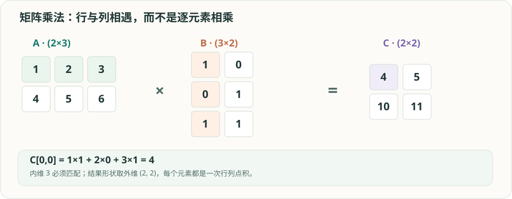
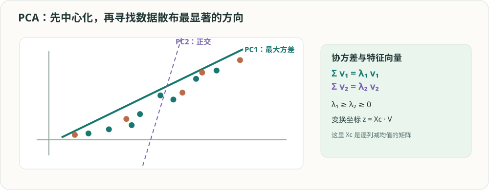

线性代数：从矩阵形状到表示空间
矩阵乘法是一条从输入特征到输出表示的计算路径；PCA 与奇异值分解则让我们看见高维数据的几何结构。
01 · 样本轴与特征轴
设一张表有 100 行房屋、3 列数值特征，记作 X∈R^(100×3)。每行是一个样本，每列是一种特征。学习一个 W∈R^(3×2) 后，Z=XW 的结果是 100 个二维输出。数字 100 是样本数，3 和 2 是输入/输出特征维度。单个向量、多行矩阵、多时间步张量表达的是不同轴的语义，不能只看元素数量。
在 NumPy 中，二维矩阵的乘法用 @；* 则表示逐元素乘法（可能涉及广播）。许多难以发现的实现错误源于忽略这种区别。
02 · 矩阵乘法如何工作
对于 A(m×p) 与 B(p×n)，内维 p 必须一致，结果形状取外维 (m,n)。每个输出单元是 A 的一整行与 B 的一整列的点积：Cᵢⱼ = Σₖ AᵢₖBₖⱼ。这不是同行同列的逐元素相乘。

这是数学中的 1 起始索引，NumPy 代码使用 0 起始。通常 AB≠BA；而当矩阵不是方阵时，反向相乘甚至可能不被定义。
03 · 从运算到几何
矩阵定义了线性变换：满足 T(x+y)=T(x)+T(y) 与 T(ax)=aT(x)。它可以旋转、缩放、剪切或投影输入空间。矩阵的每一列描述了一个基向量经过变换后的位置，因此学习权重就是学习新的特征组合方向。
两个非零向量的余弦相似度等于点积除以长度之积，它描述角度，而不是距离本身。对零向量它无定义；对带量纲不同的原始特征，它的直观意义也可能失真。
04 · PCA 为什么最大化方差
让每一列减去训练集均值，得到中心化矩阵 Xc。投影到一个单位方向后，数据沿该方向的方差越大，表示被保留的变化越多。PCA 的第一主成分是协方差矩阵最大特征值对应的方向；第二主成分在与第一方向正交的约束下继续最大化方差。

若 Xc 形状为 (n,d)，上式的协方差形状为 (d,d)。PCA 不使用目标标签，因此它寻找的是数据自身的高方差方向，未必是最有预测价值的方向。
05 · SVD 与低秩近似
对实矩阵可作奇异值分解 Xc = U·diag(s)·Vᵀ。右奇异向量给出输入特征空间的正交方向，奇异值的平方与 XcᵀXc 的特征值相关。取前 k 组奇异值和向量形成最佳的秩 k Frobenius 范数近似，但“重建误差小”并不代表对预测任务最优。
对重复奇异值、低秩矩阵，个别向量的方向可能不唯一；求值时不应该依赖符号固定。对接近奇异的线性系统，避免显式求逆，优先使用数值线性代数中的求解器。
06 · 用 NumPy 断言形状
这段实验验证矩阵乘法的四个元素、分解形状及重建误差，均可在本地用 NumPy 运行。
import numpy as np
A = np.array([[1,2,3],[4,5,6]])
B = np.array([[1,0],[0,1],[1,1]])
assert np.array_equal(A @ B, [[4,5],[10,11]])
X = np.array([[1.,2.],[2.,4.],[4.,5.],[6.,8.]])
Xc = X - X.mean(axis=0, keepdims=True)
U, S, Vt = np.linalg.svd(Xc, full_matrices=False)
assert U.shape == (4,2) and Vt.shape == (2,2)
assert np.allclose((U*S) @ Vt, Xc)
print('singular values:', S)依赖 Python 3.10+ 与 NumPy；U*S 是按列广播缩放。训练集 PCA 得到的均值与主方向应同样作用于验证与测试集，不能在测试集重新拟合。